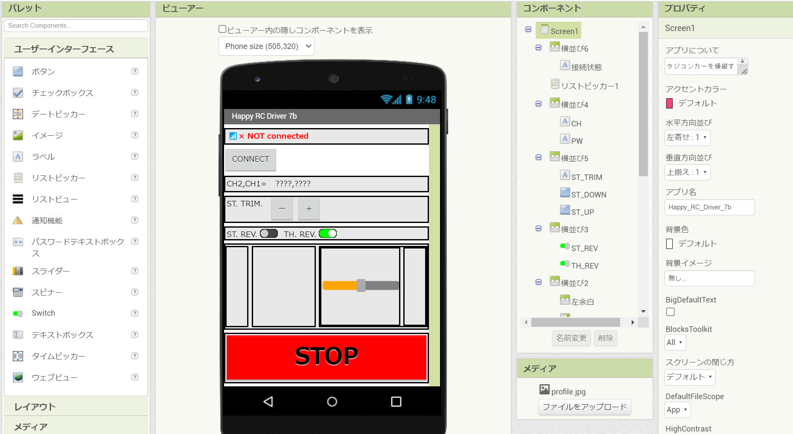

～ 目次 ～
1. 今回やりたいこと
前回までのアプリ（ver.7a）では、RCカー側に搭載されている受信機（ESP32マイコン）の電源が切れたときの状況を考慮していませんでした。
前回のアプリだと受信機電源が切れても、表示が「RCに接続済み」のままでした。（これはまずいw）
今回は接続状態（つながっているか/切れているか）によって、スマホアプリの表示が切り替わるように（アプリ側のみを）改良しました！
2. 改良版アプリ ～ver.7b～
2.1. 外観
こちらが改良後のアプリです。外観は ver.7a とほとんど変わっていませんが、実は細かい改良点があります（笑）
-
画面上部の接続状態表示を変更（英語にして絵文字を追加）
-
接続ボタンの表示を「CONNECT」と短くシンプルにした（今までは「ここにタッチして接続機器を選ぶ」という横長なボタンだった）
-
スロットルのスライダ長さを調整（縦に長すぎたので）
-
ステアのスライダを短くして右側に寄せた（左折時に、スロットルとステアを操作する指が干渉して操作しにくかったから）
-
ST.TRIM のプラスマイナスボタンの文字を半角から全角に変更（ー＋のボタンサイズがそろって操作しやすい。あとボタンが大きくなる）
-
STOPボタンを大きくした（即座に停止動作をしやすいように）
 ☝ アプリ外観（デザイン編集タブ）
2.2. 中身
接続状態の判定処理はMIT App Invetorのフォーラム1を参考にしました。下側から2つめのブロック群（タイマーブロックの内部）が今回の重要な変更点です。
「Bluetoothクライアント1.IsConnected」という部分が真だったら接続されているということになるので、このときに命令を送信する仕組みにしています。同時に表示を「📶○ Connected」とします。
逆に「Bluetoothクライアント1.DisconnectOnError」という部分が真だったら接続されていない（未接続）ことになるので、このときは命令を送信しないようにしています。同時に表示を「📶× NOT connected」とします。
3. サンプルファイル
作成したアプリのデータはこちらになります。自由に改良して使ってください！
～ MIT App Inventorプロジェクトのファイル(.aia) ～
～ ビルド済み Androidアプリのファイル(.apk) ～
4. 参考文献
-
MIT App Inventor Help「Change Text when Bluetooth disconnected」、(https://community.appinventor.mit.edu/t/change-text-when-bluetooth-disconnected/5893) ↩︎